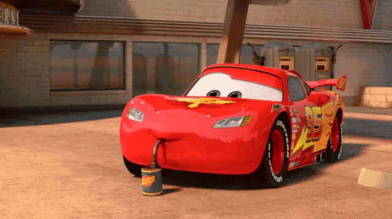

Гонка в Казани 2026
В 2026 году в городе Казань, прямо перед техникумом МЦК‑КТИТС, велась ожесточённая борьба между МакКуином и Штормом. Каждый поворот трассы стал решающим, а болельщики не отпускали взгляд ни на секунду.
МакКуин сражался за честь своего имени: скорость, смелость и дух лидера помогли ему пройти через жестокие заезды и выйти на новую ступень.

Спокойный момент перед гонкой
МакКуин сидит на чиле и делает глоток из баночки — это особое гоночное топливо, которое помогает ему набрать силы.
Это расслабленный момент отдыха и восстановления энергии перед большим заездом. Впереди его ждёт непростая гонка, поэтому сейчас важно перевести дух и собраться с мыслями. С каждым глотком он заряжается уверенностью и готовностью вновь выйти на трассу. Совсем скоро двигатели взревут, и МакКуин покажет всё, на что способен.